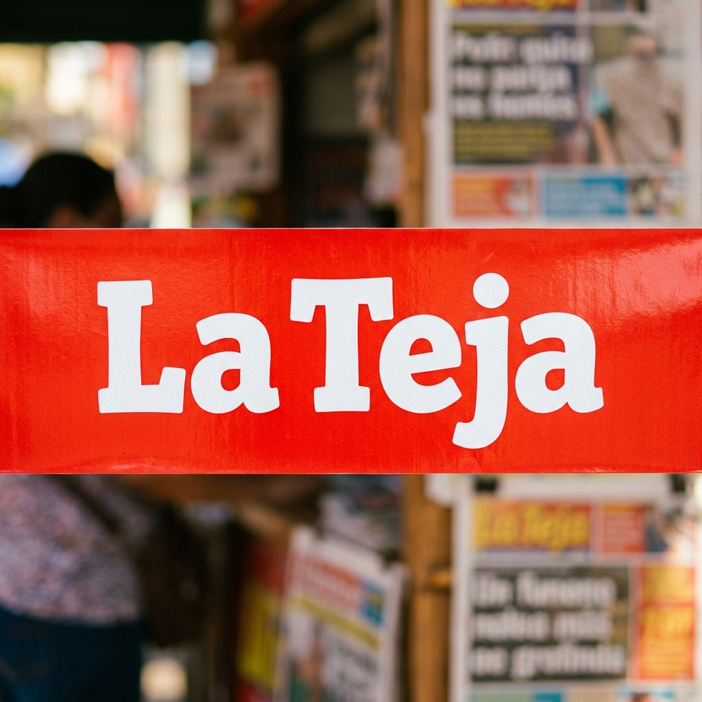

Sucesos
La historia detrás de la casa del altar narco: así fue cómo Los Maruja se adueñaron de ella
Violenta muerte abrió paso al control de la banda

Violenta muerte abrió paso al control de la banda
La investigación señala que el sospechoso también tenía varios celulares escondidos que usaba para grabar las conversaciones de Junieysis
"A veces me he sentido tentada a hablar sobre ese proceso pero uno tiene que ser cauteloso", mencionó la reportera de canal 7